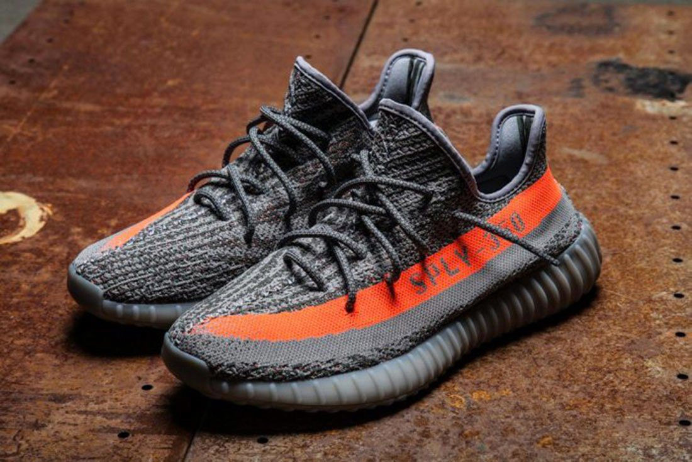

Adidas Yeezy
Adidas AG (нем. [ˈadiˌdas], рус. произн. «адида́с», от имени Ади (Адольфа) Дасслера) — немецкий промышленный концерн, специализирующийся на выпуске спортивной обуви, одежды и инвентаря. Генеральный директор компании — Каспер Рорштед (с октября 2016). В настоящий момент компания ответственна за дистрибуцию продукции компаний Adidas, Reebok, Y-3, RBK & CCM Hockey, а также Taylor-Made Golf[2].
Ка́нье Ома́ри Уэ́ст[~ 1] (англ. Kanye Omari West; род. 8 июня 1977, Атланта, Джорджия) — американский исполнитель хип-хопа, рэпер, продюсер, композитор и дизайнер. Вырос в Чикаго, где с юных лет был связан с музыкой. В конце 1990-х — начале 2000-х он получил известность как продюсер, приняв участие в создании хитов для таких исполнителей, как Jay-Z, Ludacris, Талиб Квели и Алиша Киз. Бросив обучение в университете, чтобы сосредоточиться на музыке, он решил стать рэпером, выпустив дебютный альбом, The College Dropout, в 2004 году. За ним последовали альбомы Late Registration 2005 года, Graduation 2007 года, 808s & Heartbreak 2008 года, My Beautiful Dark Twisted Fantasy 2010 года, совместный с Jay-Z альбом Watch the Throne 2011 года, Yeezus 2013 года, The Life of Pablo 2016 года и ye 2018 года.